Map
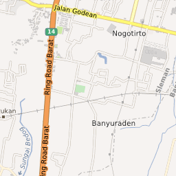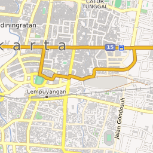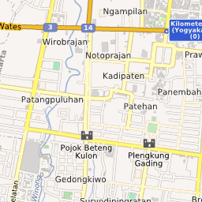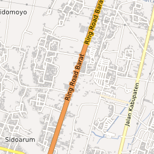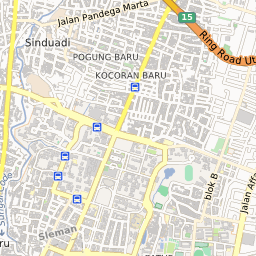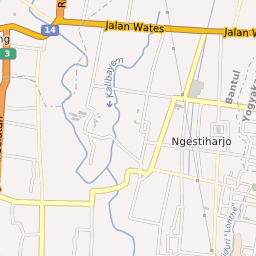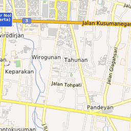
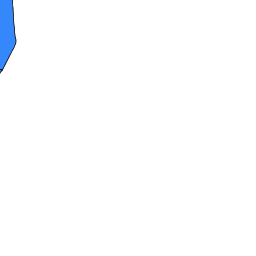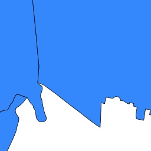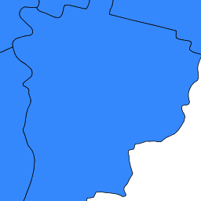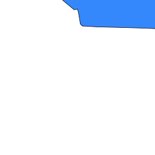
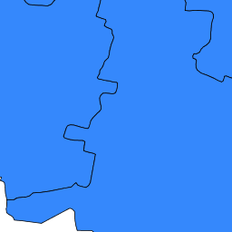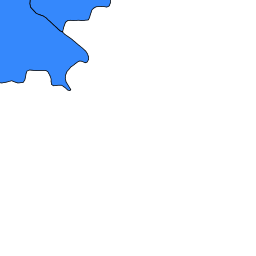
-7.7809; 110.3607
+
-
Leaflet
| Imagery from
GIScience Research Group @ University of Heidelberg
— Map data ©
OpenStreetMap
Menu Peta
Layer Utama
Batas Desa Sleman
Desa Yogyakarta WFS
Menu tambahan
Unduh Data
Tampilkan foto
...
) 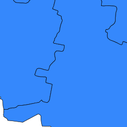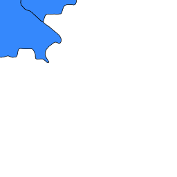
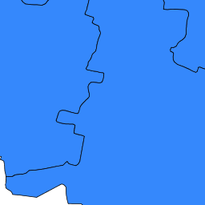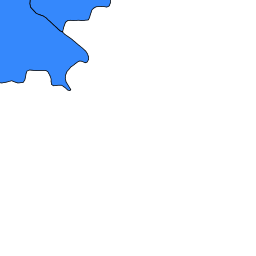